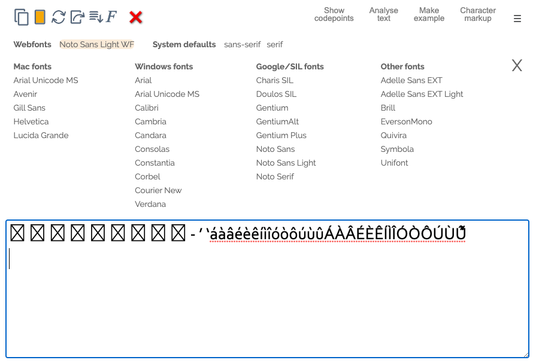

This page tells you how to add your own fonts to the font preview section of a character app, and provides additional hints.
The font preview allows you to see what the text looks like with a particular font. Mouse over the font names to apply the new font temporarily to the text in the text area. Click on a font name to switch to that font and store your setting. This is useful for choosing a font for display, or for comparing one font with another.
Unless the font name points to a webfont, you will need to have the font present on your system to view the glyphs.
See a video of the font preview in action
Adding your own fonts
To add your own fonts, click on Manage fonts, near the bottom of the page. In the text box, list fonts you want to add to the font selection lists. One font name per line. Then click on Set.
See a video of how to add fonts to the selection lists.
Identifying missing characters
Because browsers do font substitution for characters that are missing from a font, it isn't always easy to spot those characters.
If you download the Unicode BMP Fallback SIL and/or the Adobe NotDef font and install it, the character app will clearly show these characters. See an example in this screen grab. (The SIL font only works for BMP characters. You'll need both for best coverage of BMP plus Supplementary ranges.)

(Ideally, i would include that font as a webfont, but I didn't manage to create one successfully.)
To find out what characters are missing, simply select them and click on Show codepoints to reveal their names.
Checking coverage for a specific language
You may sometimes want to check whether a font covers the repertoire needed for a given language. Here's how you can do that.
Between the table rows for Sources and Region, look for a link Check for fonts. If you find that link, then click on it (not all languages have been set up for this yet).
The link will open a relevant character app, and add the required repertoire for that language to the main text box. It will also automatically open the font preview panel.
Simply mouse over the font names in the font preview to see which characters are supported and which are not.
If the app recognises a sequence of characters that has a particular significance in its own right, it will show that sequence (slightly indented) after the initial character.
Suggested additional fonts
There are many other fonts out there which are not pointed to by the font preview pane, by default. Here are some suggestions for fonts you may want to add.